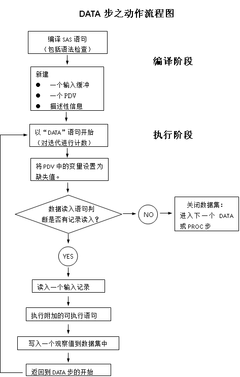

SAS DATA步之全揭秘
一些概念
- 程序数据向量（PDV）
- SAS自动变量名及其使用
- 理解DATA步内部处理过程
- 代码编译期间发生的事情
- 程序执行期间实际发生了什么
- 如何获取和存储变量属性
DATA时建立SAS数据集的主要方法之一。一些涉及数据处理和创建数据集的任务可能只能通过DATA步才能解决
DATA步分编译和执行两个阶段，PDV贯穿SAS编译和执行的两个阶段，决定了信息在DATA步中的存储及变化
编译阶段包括：
- 编译SAS语句，包括检查语法
- 创建一个输入缓存区（input buffer）（如果需要读入原始数据文件）、一个PDV和描述性信息
执行阶段包括：
- 计算DATA步迭代的次数（从DATA语句开始）
- 将PDV中所有变量设成缺失值并初始化自动变量
- 读取输入观测（从原始文件或SAS数据集）
- 执行附加的处理或计算语句
- 将一条数据记录写入输出数据集并返回到DATA步语句
PDV贯穿编译的执行阶段：
- PDV是内存的一个临时逻辑区域，SAS建立数据集时，每条观察值只有一次机会用的PDV
- 包含所有变量的当前值
- 包含两个自动变量：_N_和_ERROR_
DATA步
一个DATA步包含SAS语言的一组语句，这些语句具有以下功能
- 从外部文件读入数据
- 将数据写入外部文件
- 读入SAS数据集和SAS视图
- 创建SAS数据集和SAS视图
一旦数据可以以SAS数据集的形式访问，就可以通过SAS过程步来分析数据和写报告
可以运用DATA步：
- 创建SAS数据集（SAS数据集或SAS视图）
- 根据包含原始数据（外部文件）和文件创建SAS数据集
- 通过提取子集、合并、修改和更新已经存在数据集的方式来创建新的数据集
- 分析、处理或展现数据
- 为新变量赋值（在有公式计算的情况下）
- 撰写报告或将文件写入磁盘或磁带
- 信息检索
- 文件管理
DATA步以‘DATA’语句开始（即显示的表明数据步的开始），以‘RUN’语句结束，在结束时会编译或执行RUN语句。在数据步最后一个观察值读取前，‘RUN’的功能都是以非显示的形式执行RETURN功能，去继续循环的操作。  编译阶段
如上所示，DATA步的第一个阶段就为编译阶段。在编译阶段SAS的任务如下： - 自动将SAS语句编译成将会在后面执行的机器语言
- 确定每个变量的类型和长度
- 确定变量是否有必要进行类型转换
- 如果有INPUT语句，为外部文件新建读取内存缓存区
- 创建PDV（Program Data Vector）
- 创建数据集和变量属性的描述性信息
- 处理语句，该项任务仅限于编译阶段；这为编译器如何新建变量提供信息；事实上，他们决定了如何在PDV内建立变量及信息；这些信息包括：DROP；KEEP；RENAME；RETAIN；RHERE；LABEL；LENGTH；FORMAT；ARRAY；BY；ATTRIB
- 创建自动变量：包括_N_,_ERROR_,RND=,IN=,FIRST,LAST,POINT=